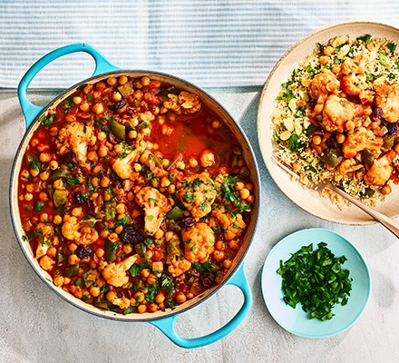

Spicy Chickpea Stew

Description
filling meal that encourages healthy gut bacteria with this chickpea and cauliflower stew. A valuable plant-based protein, chickpeas are full of fibre
Ingredients
- 1 tbsp rapeseed oil
- 2 onions, roughly chopped
- 2 green peppers, deseeded and cut into cubes
- 2 tsp hot chilli powder
- 1 tsp ground passata
- 2 x 400g cans chickpeas
- 2 tsp vegetable bouilon powder
- 40g flame raisins
- 0.5 lemon juiced
- 350g cauliflower florets
- 15g parsley, chopped
- 140g wholemeal couscous
- 40g toasted flaked almonds
Steps
- Heat the oil in a large lidded pan over a medium heat and fry the onions for 10 mins, stirring often until golden. Stir in the peppers and cook for 5 mins more
- Add the chilli powder, coriander and cumin, stir briefly, then tip in the passata and chickpeas along with the liquid from the cans
- Stir in the bouillon powder, raisins and lemon zest, then add the cauliflower. Cover tightly and simmer over a medium heat for 15-20 mins until the cauliflower is tender. Stir in half the parsley
- Meanwhile, put the couscous in a heatproof bowl and pour over 175ml boiling water from the kettle. Stir in the lemon juice, then cover and let stand for about 10 mins until the couscous has absorbed the liquid and is tender. Stir in the toasted flaked almonds and most of the remaining parsley
- Divide half the couscous between two plates and top with half the chickpea stew and the rest of the parsley. Leave the remainder to cool for another day. Will keep covered and chilled for up to three days. Reheat the stew in a pan over a low heat with a splash of water until piping hot. Reheat the couscous in the microwave